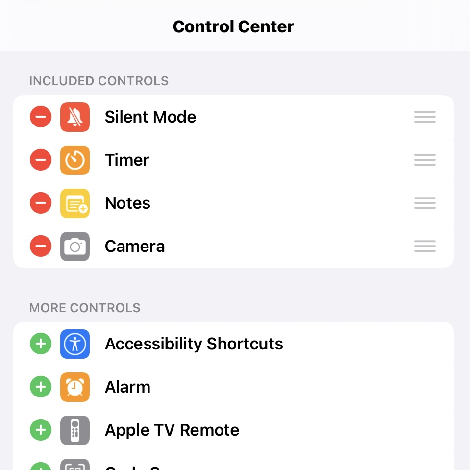
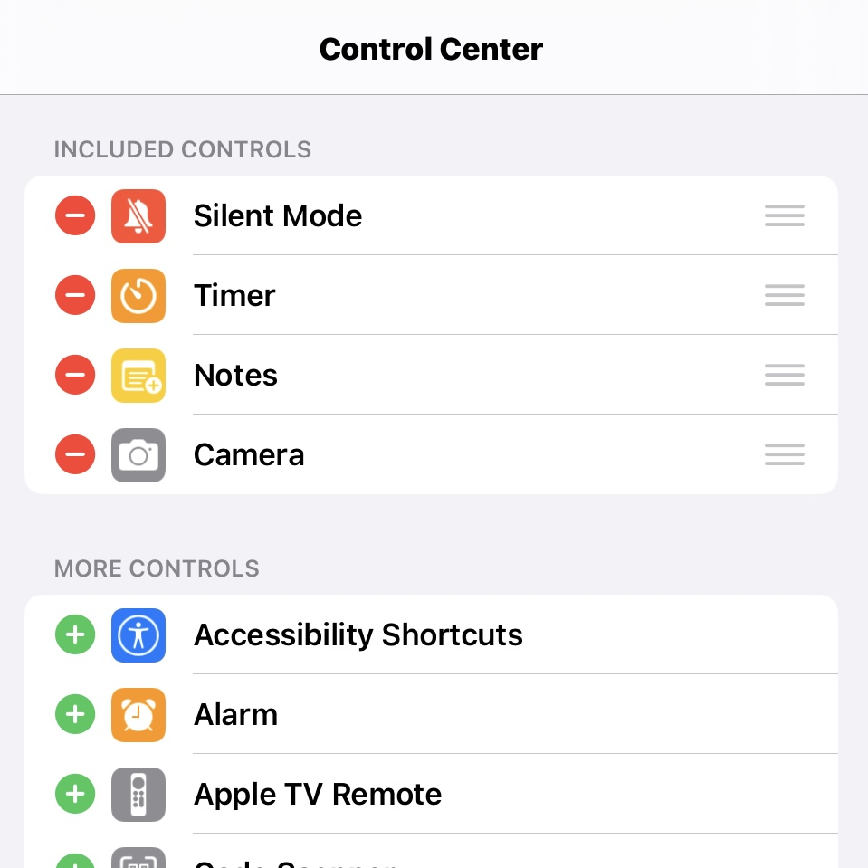

Access, Use, and Customize the Control Center on Your iPhone, iPad, and iPod touch
Learn how to access, use, customize your Control Center in this article.
How to Access Control Center
- To access Control Center on an iPhone without a Home Button, swipe down from the top right corner of the screen on the battery icon.
- To access Control Center on an iPhone or iPod touch with a Home Button, swipe up from the bottom edge of the screen.
- To access Control Center on an iPad, swipe down from the top right corner of the screen on the battery icon.
To access more controls within Control Center, press and hold on an item to expand it.
On iOS 10 and older, access Control Center on an iPad from the bottom edge of the display.
Customize the Control Center Layout and Buttons
Since iOS 12, Apple introduced a customizable Control Center.
iPadOS 18
iOS 18
- Open Control Center
- Tap
 at the top left of Control Center to begin editing the controls.
at the top left of Control Center to begin editing the controls. - Do any of the following:
‣ Rearrange controls: Drag a control to a new position.
‣ Resize controls: Drag the handle in the bottom right corner of a control.
‣ Remove a control or control panel: Tap in the upper left corner of a control.
in the upper left corner of a control.
‣ Add a control: Tap Add a Control at the bottom of Control Center to open the Controls gallery. Tap a control in the gallary to add it to Control Center. - When you are finished customizing, Save your changes by swiping up on the Home Bar at the bottom of the screen. On an iPhone or iPod touch with a Home Button, press the Home button to exit edit mode and save your changes.
iOS 12 - iPadOS 17
iOS 12 - 17
You can customize the Control Center by adding and rearranging the controls in Settings.
- Open Settings
- Tap Control Center
‣ Tap next to a control to remove it from Control Center
next to a control to remove it from Control Center
‣ Tap next to a control to add it from Control Center
next to a control to add it from Control Center
‣ Drag next to a control to rearrage the order.
next to a control to rearrage the order.
 

In iOS 12 and 13, tap on Customize Controls within the Control Center settings.
Other Notes and Settings
Below are a couple settings and notes about how Control Center works.
Turn Off Access to Control Center in Apps
If you don't want to be able to open Control Center while inside apps, follow the steps below:
- Open Settings
- Tap Control Center
- Disable Access Within Apps.
Turn Off Access to Control Center while Locked
Disabling access to Control Center while the device is locked is highly recommended for higher security. This is recommended so that if your device is stolen, thieves cannot put your phone into Airplane Mode and block remote access for you to be able to track or remotely erase.
- Open Settings
- Tap one of the following:
‣ Face ID and Passcode (iPhone or iPad with Face ID
‣ Touch ID and Passcode (iPhone or iPad with Touch ID)
‣ Passcode (iPod touch) - Scroll down to the Allow Access When Locked section and disable Control Center
Temporarily Disconnect from Wi-Fi or Bluetooth
In Control Center, turning off  or
or  , actually only temporarily disconnects your device from the network or bluetooth device. To fully disable Wi-Fi and Bluetooth®
, actually only temporarily disconnects your device from the network or bluetooth device. To fully disable Wi-Fi and Bluetooth®
Last updated: March 21, 2025
Reference the original support articles by Apple here:
Use and customize Control Center on iPhone - Apple Support
Use and customize Control Center on iPad - Apple Support
Use and customize Control Center on iPod touch - Apple Support
All references to Apple Inc. and their products and services are trade-marked and are used in these articles for educational purposes.